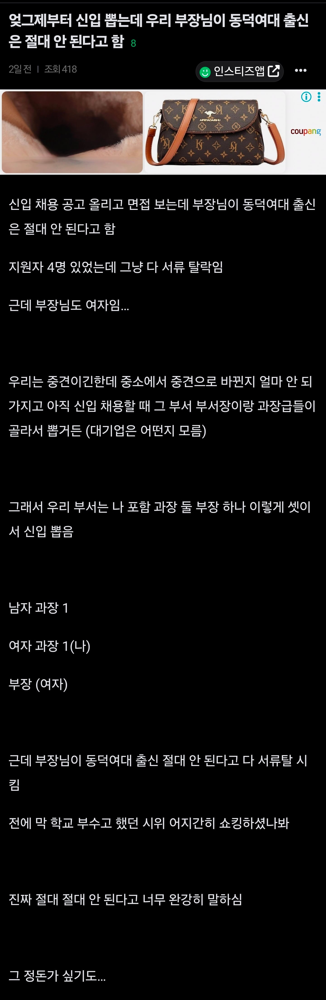

부장이 동덕여대 출신은 절대 안된다고 함.php
댓글
사상이 극단적인 사람은 현실까지 사상을 들고오니까
같이 일을 해야하는, 한명 제대로 뽑기위해 가리고 가려야 하는 자리에 굳굳이 리스크 테이킹을 하면서 사람뽑을 이유가 없긴 하지. 동덕여대 뿐 아니라 괜한 이슈에 말려있을 법한 케이스는 그냥 다 거르는 것임.
중견쯤 되는 회사면 동덕여대라는 대학이 있는 지도 몰라야 정상임
인성과 지능 양쪽에서 증명하셨잖아ㅋㅋ
예상은 했던 일이지만ㅋㅋ 병신짓 안 한 정상 학생은 뭔 죄냐 ㅅㅂ ㅋㅋㅋ
애들이 학교 때려뿌술때 마음으로 동조는 하지만 행동은 안한 년들인데 억울할것도 없음.
대학교에서 하던짓을 회사에 안하리라는 보장이 있을까?